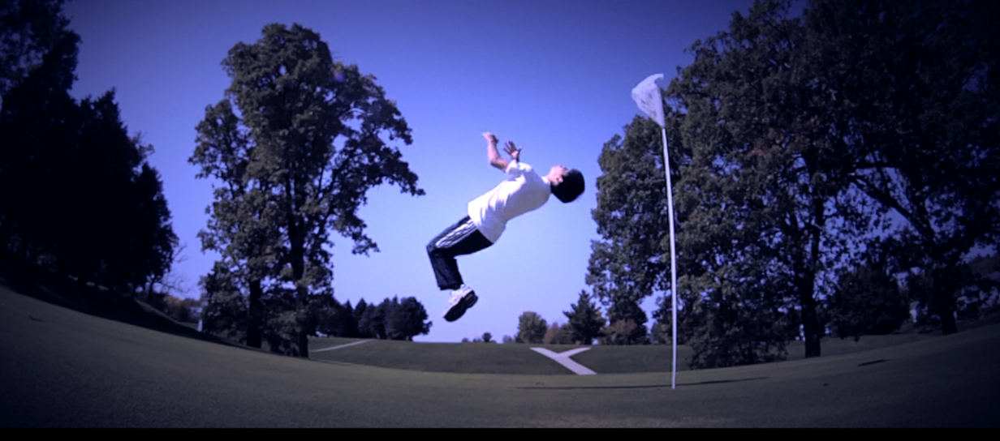

From an early age this young man has always been into action movies and thrills. Gunner Kwan was raised by his two parents, Helen and Tony Kwan. From birth, this kid was fed with strong nutrition. Averaging 200 grams of protein a day and 7 glasses of whole milk, this kid developed into a beast. Gunner also had intense workouts at an early age, forced to swim across a freezing lake twice a day, this kid became fearless and an strong swimmer. Soon after turning 6 he was enrolled in his first karate class and by age 10 had already received a black belt After age 10 Gunner went off to the Silence in Arms school where he learned how to equip and wield many form of weapons. Gunner was quickly increasing his belt of power as his muscle memory formed.
After leaving Silence in Arms school, Gunner quickly became affiliated with skateboarding. After his parents encouraged him to not skateboard, Gunner took up the trend anyway. Skateboarding was a true lifesyle for Gunner. Riding to the skatepark everyday and spending 3 to four hours practicing and perfecting his moves. It took three years of kickflips and grinding rails would go by before Gunner realized skateboarding would not bring his athletic potential all the way.


While seeking his full potential, Gunner took a few years to reflect. During these years, Gunner took up the sport of ping pong, and played constantly with his buddies, becoming very good, very fast. Ping pong was an interesting dynamic to Gunner's skill. It increased his ability to perceive depth as well as sharpened his eye hand coordination. This sport also made Gunner's performance anxiety lessen, and his dominane shine. This passion for ping pong would continue to benefit Gunner in his later years.
In these next few years, Gunner had finally realized his full potential resides in the art of parkour and flips. With no mentor to guide himself, Gunner taught himself how to backflip, sideflip, frontflip, wallflip and many more. His potential was only beginning. With many good tricks comes man bad falls. Gunner had definitely seen a good amount of them. But that didn't stop his journey. Landing flips only gave Gunner more and more confidence to learn more and execute even more tricks.
Gunner is currently in his parkour phase, and will be looking to compete in American Ninja Warrior in the following years. The training and work that needs to be done is far from a few years of training reach, but is definitely possible for this young passionate man.